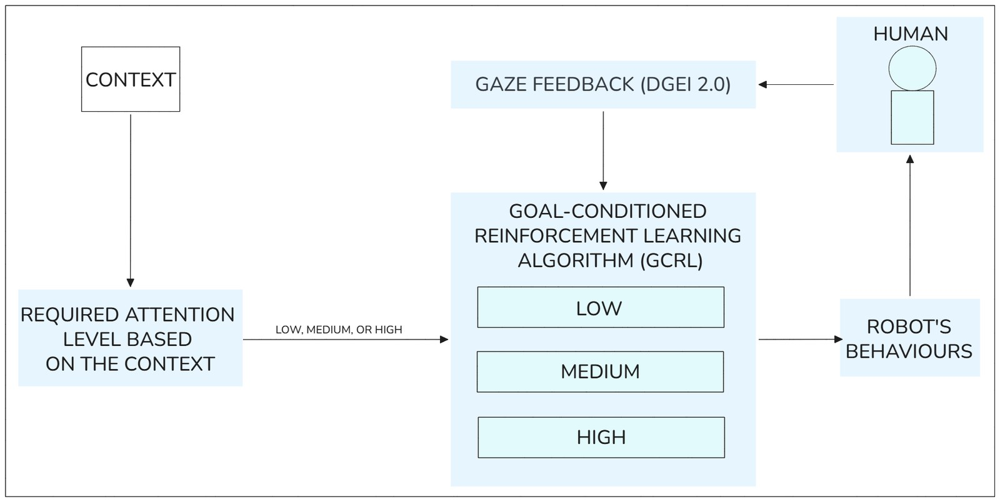
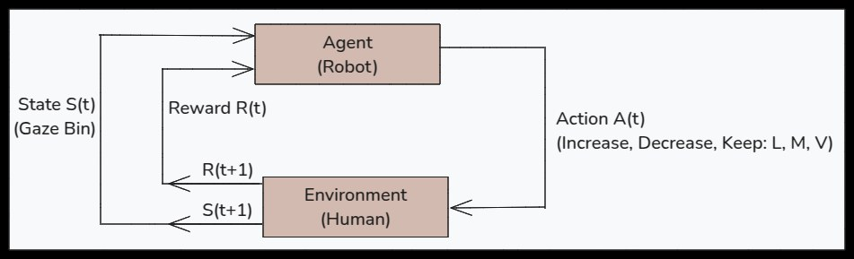
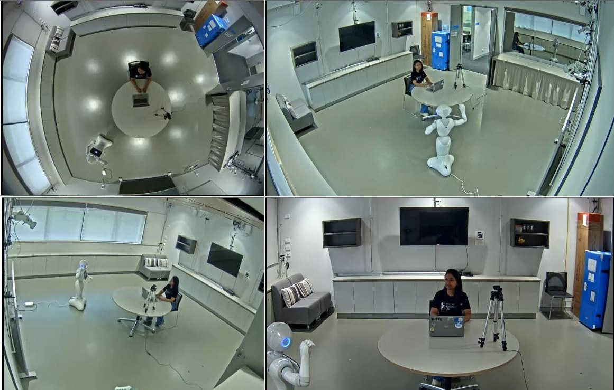
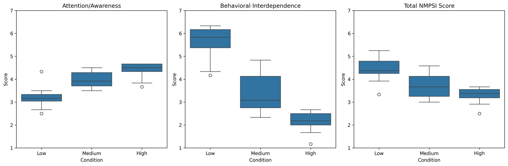
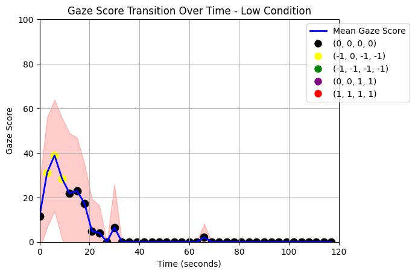
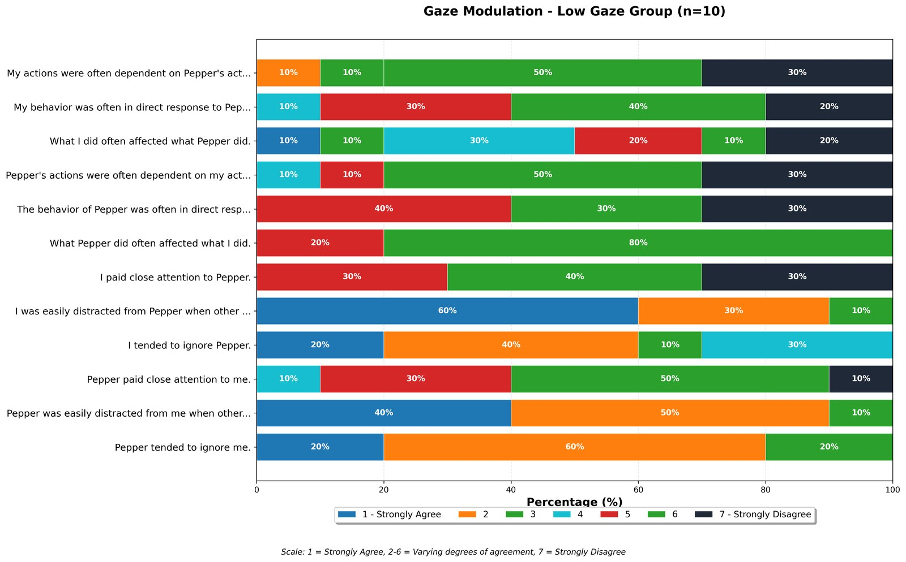
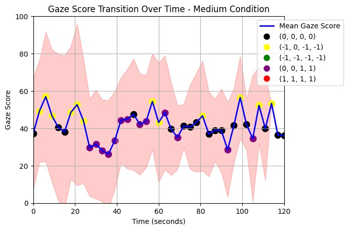
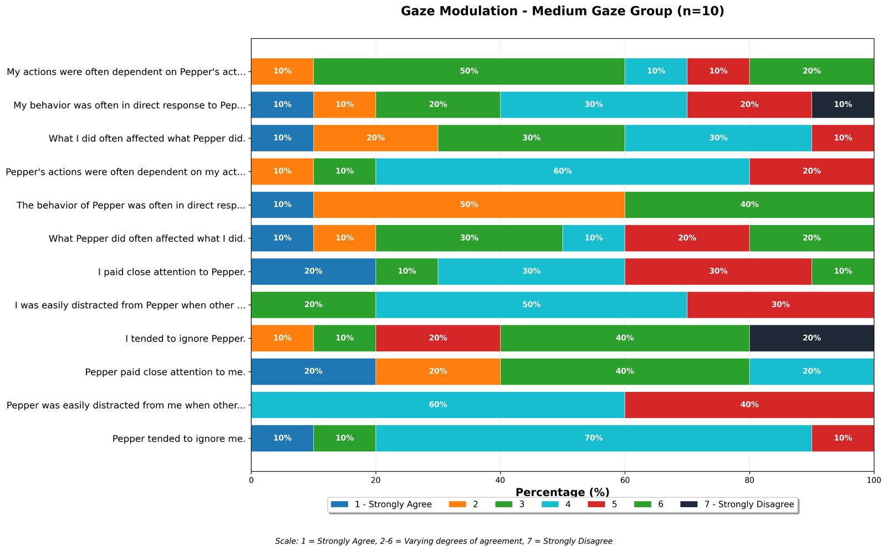
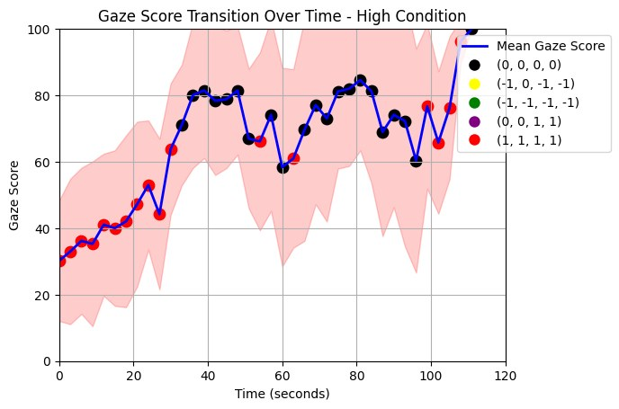
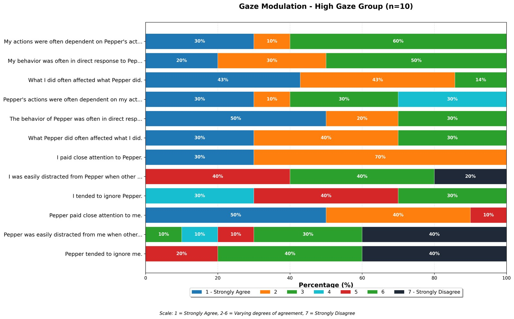

A Goal-Conditioned Deep Reinforcement Learning Approach to Gaze Modulation for Attention Regulation
Abstract
Effective human-robot interaction requires dynamic attention regulation: the ability to both capture and release human attention based on context, a capability current robotic systems largely lack. This paper presents a goal-conditioned reinforcement learning (GCRL) framework that enables a robot to adaptively modulate human gaze engagement, and consequently attention, across distinct levels through coordinated behavioural control. Unlike prior approaches that require separate models for each engagement level, this unified GCRL simultaneously learns to adjust multiple platform-specific behaviours, head movement, navigation, gestures and vocal parameters, on a SoftBank Pepper robot, based on real-time gaze feedback. Central to the approach is the Dynamic Gaze Engagement Index 2.0 (DGEI 2.0), which combines stationary gaze entropy with temporal consistency metrics to differentiate sustained engagement from scattered attention, providing fine-grained feedback for reward shaping. Controlled experiments with 30 participants demonstrate the framework's effectiveness: gaze engagement precisely tracked target levels of 0, 50 and 100, while subjective measures revealed significant differences across intensity conditions (p < 0.001, η² = 0.599 for attention and awareness). High-intensity behaviours achieved 90% attention agreement rates, while low-intensity modes suppressed visual engagement to near-zero levels. These results establish a validated framework for bidirectional attention regulation in HRI, a key enabler for robots that need to navigate when to engage versus when to fade into the background, essential for long-term human-robot coexistence.

System overview. Context sets the target attention level, DGEI 2.0 supplies real-time gaze feedback, and a single goal-conditioned policy selects Pepper's behaviour to close the loop.

The problem framed as a standard agent-environment loop: discretised gaze bins as state, and incremental head, navigation, gesture and vocal adjustments as action.

Multi-camera experimental setup used across both studies, with participants seated slightly to the side, facing Pepper, while L2CS-Net tracked gaze in real time.

Attention and interdependence move in opposite directions: high-intensity behaviour maximises attentional capture, low-intensity behaviour maximises perceived interdependence.
Video Presentation
Results by Condition
In the between-subject study (n = 30, 10 per condition), each target level shaped gaze engagement and perceived interaction very differently. The same DGEI 2.0 metric and the same trained policy produced all three patterns below, only the goal changed.
Low (LGM) · release

Visual engagement suppressed to near zero after a brief transition. The only questionnaire item with unanimous agreement was that Pepper's behaviour affected participants, pointing to unidirectional rather than reciprocal influence.

Medium (MGM) · sustain

Gaze fluctuated around a moderate, sustained level. 60% agreed they paid close attention while only 20% reported distraction, consistent with a robot that stays salient without overwhelming.

High (HGM) · capture

Engagement rose quickly and stayed elevated. 90% paid close attention, none ignored Pepper, and over 80% agreed the robot attended to them in turn, the strongest bidirectional effect observed.

One-way ANOVAs across the three conditions found significant differences on every measure: Attention and Awareness (F(2,27) = 20.203, p < .001, η² = 0.599), Behavioural Interdependence (F(2,27) = 55.862, p < .001, η² = 0.805), and Total NMSPI score (F(2,27) = 13.409, p < .001, η² = 0.498). Cronbach's alpha confirmed excellent reliability for both scales (α = 0.934 Attention/Awareness, α = 0.933 Interdependence). Attention and interdependence moved in opposite directions across conditions, highlighting that engagement and reciprocity are not the same thing to optimise for.
Read the Paper
BibTeX
@inproceedings{wijesinghe2026gcrlgaze,
title = {A Goal-Conditioned Deep Reinforcement Learning Approach to Gaze Modulation for Attention Regulation},
author = {Wijesinghe, Nipuni H. and Jayasuriya, Maleen and Hinwood, David and Busby Grant, Janie and Herath, Damith},
booktitle = {2026 IEEE/RSJ International Conference on Intelligent Robots and Systems (IROS)},
year = {2026},
organization = {IEEE/RSJ}
}